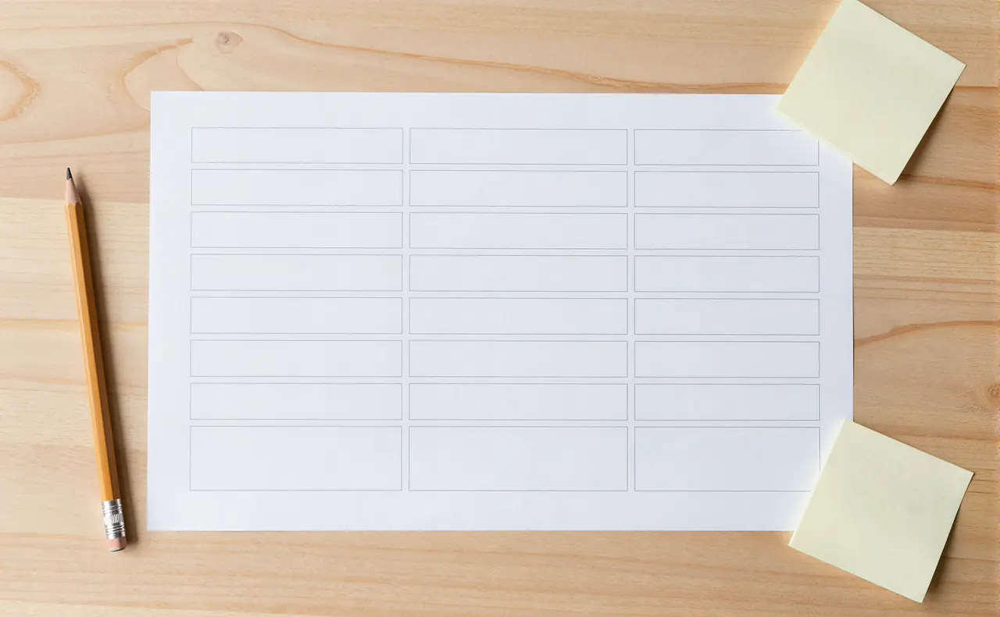
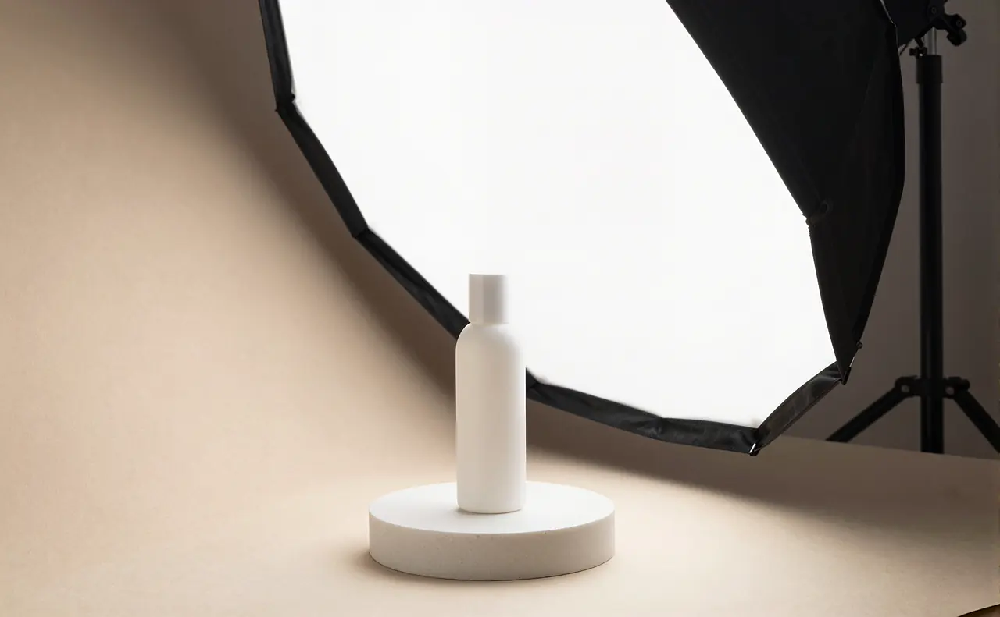

Landing Page
Cấu trúc landing page bán hàng: gồm những khối nào, xếp theo thứ tự nào, viết gì trong từng khối
Hai landing page bán cùng một sản phẩm, cùng ngân sách quảng cáo, có thể cho số đơn rất khác nhau chỉ vì thứ tự và nội dung các khối. Bài này đi qua từng khối của một landing page bán hàng: khối đó trả lời câu hỏi nào của khách, cần viết gì, đặt ở đâu, và những lỗi làm khách rời trang.

Một landing page bán hàng hiệu quả thường gồm 8 đến 12 khối, xếp theo đúng thứ tự câu hỏi trong đầu khách: màn hình đầu (lời hứa, ảnh sản phẩm, nút hành động), dải niềm tin, vấn đề khách đang gặp, sản phẩm là gì, lợi ích chính, cách dùng, bằng chứng thật, ưu đãi và giá, cam kết đổi trả, câu hỏi thường gặp, form đặt hàng cuối trang và thông tin doanh nghiệp. Không phải trang nào cũng cần đủ 12 khối: khách đã biết sản phẩm cần trang ngắn, ưu đãi lên sớm; khách lạnh từ quảng cáo khám phá cần trang dài hơn, nói vấn đề trước.
Nếu bạn chưa rõ landing page khác website ở đâu, bài landing page khác website thế nào giải thích từ đầu. Bài thiết kế landing page bán hàng chuyển đổi cao nói về chuẩn bị, đo lường và A/B test. Bài này tập trung vào một việc: dàn khối và nội dung từng khối.
Nguyên tắc chung: mỗi khối trả lời một câu hỏi
Người xem landing page không đọc từ trên xuống như đọc sách. Họ lướt, dừng ở chỗ có câu trả lời cho điều đang băn khoăn, rồi quyết định đi tiếp hay thoát. Vì vậy, cách dễ nhất để dàn khối là liệt kê các câu hỏi khách sẽ có, theo thứ tự xuất hiện, rồi cho mỗi khối trả lời đúng một câu.
- Đây là gì, có đúng thứ mình đang tìm không? Màn hình đầu.
- Người bán có đáng tin không? Dải niềm tin, bằng chứng, thông tin doanh nghiệp.
- Nó giải quyết vấn đề của mình thế nào? Vấn đề, giải pháp, lợi ích, cách dùng.
- Giá bao nhiêu, có đáng không? Ưu đãi, so sánh, cam kết.
- Còn gì vướng? Câu hỏi thường gặp.
- Mua bằng cách nào? Form, nút Zalo, nút gọi.
Khi một khối không trả lời câu nào, nó chỉ làm trang dài thêm. Khi một câu hỏi không có khối trả lời, đó là chỗ khách rời đi.
12 khối của một landing page bán hàng
| # | Khối | Khách đang hỏi | Nội dung chính |
|---|---|---|---|
| 1 | Màn hình đầu | Đây là gì, có hợp mình không? | Tiêu đề lời hứa, câu phụ, ảnh sản phẩm, nút hành động |
| 2 | Dải niềm tin | Người bán có thật không? | Chứng nhận, số năm hoạt động, chính sách giao hàng, đổi trả |
| 3 | Vấn đề | Họ có hiểu mình không? | Hai, ba tình huống khách đang gặp, bằng lời của khách |
| 4 | Giải pháp | Sản phẩm này là gì? | Giới thiệu ngắn, ảnh hoặc video sản phẩm |
| 5 | Lợi ích | Mình được gì? | Ba đến năm lợi ích, mỗi lợi ích một câu và một hình |
| 6 | Cách dùng | Có phức tạp không? | Ba bước sử dụng hoặc quy trình làm dịch vụ |
| 7 | Bằng chứng | Người khác dùng thấy sao? | Đánh giá thật, ảnh khách gửi, video sử dụng |
| 8 | So sánh | Sao không mua chỗ khác? | So với cách làm cũ hoặc lựa chọn khác, nói thật |
| 9 | Ưu đãi và giá | Bao nhiêu tiền, có đáng không? | Giá, combo, quà, thời hạn ưu đãi thật |
| 10 | Cam kết | Không vừa ý thì sao? | Đổi trả, bảo hành, hoàn tiền, điều kiện rõ |
| 11 | Câu hỏi thường gặp | Còn gì vướng? | Năm đến tám câu: ship, thanh toán, cách dùng, đối tượng |
| 12 | Form cuối và chân trang | Mua bằng cách nào? | Form ngắn, nút Zalo, số điện thoại, thông tin doanh nghiệp |
Viết gì trong từng khối
1. Màn hình đầu
Đây là khối quan trọng nhất, vì nhiều khách chỉ xem đúng phần này. Tiêu đề nói kết quả khách nhận được, không phải tên công ty. Câu phụ giải thích ngắn sản phẩm là gì, cho ai. Ảnh sản phẩm thật, rõ, chiếm phần lớn khung trên điện thoại. Một nút hành động nổi bật, ghi đúng việc sẽ xảy ra ("Đặt hàng, giao tận nơi" thay vì "Gửi"). Thông điệp phải khớp với quảng cáo khách vừa bấm; bài landing page chạy quảng cáo Facebook, TikTok nói kỹ về chuyện khớp thông điệp này.
2. Dải niềm tin
Một hàng ngắn ngay dưới màn hình đầu: giao hàng toàn quốc, đổi trả trong bao nhiêu ngày, chứng nhận sản phẩm có thật, năm thành lập. Chỉ ghi những gì kiểm chứng được. Logo đối tác hay báo chí chỉ đặt khi bạn thực sự được hợp tác hoặc được đưa tin.
3. Vấn đề
Mô tả hai, ba tình huống khách đang gặp, bằng chính cách họ nói trong tin nhắn và bình luận. Ví dụ minh họa với sản phẩm gối chống đau cổ: "Sáng dậy cổ cứng, quay đầu cũng thấy mỏi", "Đã đổi ba cái gối mà vẫn không ngủ sâu". Khách thấy mình trong đó sẽ đọc tiếp. Đừng phóng đại hay dọa, nhất là với sản phẩm liên quan sức khỏe.
4. Giải pháp
Giới thiệu sản phẩm trong hai, ba câu: nó là gì, khác ở điểm nào. Một video ngắn quay sản phẩm thật thường giải thích nhanh hơn một đoạn chữ dài.
5. Lợi ích
Viết lợi ích, không viết thông số. "Lõi cao su non" là thông số; "giữ dáng sau nhiều năm, không xẹp" là lợi ích. Ba đến năm ý là đủ, mỗi ý kèm một hình minh họa. Thông số đầy đủ để ở khối phụ hoặc trong câu hỏi thường gặp cho người cần.

6. Cách dùng hoặc quy trình
Ba bước đánh số, mỗi bước một câu và một hình. Với dịch vụ, đây là quy trình từ lúc khách đặt lịch đến khi nhận kết quả. Khối này giảm nỗi lo "có phức tạp không, có mất thời gian không".
7. Bằng chứng
Đánh giá thật của khách, kèm tên viết tắt và khu vực nếu khách đồng ý; ảnh chụp tin nhắn khen đã che thông tin cá nhân; video khách dùng sản phẩm. Không bịa đánh giá, không dùng ảnh người mẫu làm "khách hàng". Với mỹ phẩm, thực phẩm bảo vệ sức khỏe và dịch vụ y tế, nội dung quảng cáo có quy định riêng, nên kiểm tra trước khi đăng ảnh trước và sau hay lời khẳng định công dụng.
8. So sánh
Khối không bắt buộc, nhưng hữu ích khi khách đang cân nhắc giữa nhiều lựa chọn. So với cách làm cũ (tự làm, dùng sản phẩm thông thường) thường an toàn hơn so trực tiếp với tên đối thủ. Nói thật cả điểm mình không hơn.
9. Ưu đãi và giá
Ghi giá rõ ràng. Nếu có nhiều lựa chọn, tối đa ba gói hoặc combo, đánh dấu gói nên chọn. Quà tặng, phí ship, thời hạn ưu đãi nằm ngay cạnh giá. Đồng hồ đếm ngược chỉ dùng khi hạn là thật; đồng hồ tự quay lại từ đầu mỗi lần tải trang làm mất lòng tin ngay khi khách nhận ra.
10. Cam kết
Điều kiện đổi trả, bảo hành, hoàn tiền viết ngắn, cụ thể: bao nhiêu ngày, trong trường hợp nào, ai trả phí ship. Một cam kết rõ thường thuyết phục hơn nhiều lời khen.
11. Câu hỏi thường gặp
Lấy từ tin nhắn thật: giao bao lâu, có kiểm hàng không, dùng cho ai, bảo quản thế nào, thanh toán ra sao. Dạng thu gọn, bấm mở từng câu, để trang không quá dài trên điện thoại.
12. Form cuối và chân trang
Form chỉ hỏi những gì cần để giao hàng hoặc gọi lại: tên, số điện thoại, có thể thêm địa chỉ và lựa chọn gói. Bên cạnh là nút nhắn Zalo cho khách ngại điền form. Chân trang ghi tên doanh nghiệp, địa chỉ, số điện thoại, chính sách bảo mật; vừa tạo niềm tin vừa là yêu cầu thường gặp khi duyệt quảng cáo.
Thứ tự thay đổi theo độ "nóng" của khách
Thứ tự 12 khối ở trên là bản đầy đủ cho khách lạnh, tức người lần đầu thấy sản phẩm qua quảng cáo khám phá. Với nhóm khách khác, nên rút gọn và đảo thứ tự:
- Khách lạnh (quảng cáo khám phá, chưa biết thương hiệu): giữ đủ khối, vấn đề và lợi ích lên trước, giá để sau khi khách đã hiểu giá trị.
- Khách ấm (đã xem video, đã tương tác fanpage): bỏ bớt phần vấn đề, đưa bằng chứng và ưu đãi lên sớm hơn.
- Khách nóng (quảng cáo bám đuổi, tìm đúng tên sản phẩm trên Google): màn hình đầu có luôn giá và ưu đãi, form ngay khối thứ hai hoặc thứ ba, phần còn lại để ai cần thì đọc.
Nút hành động nên lặp lại sau mỗi hai, ba khối, để khách quyết định lúc nào cũng có chỗ bấm mà không phải cuộn lại.
Bố cục trên điện thoại
Khách từ quảng cáo mạng xã hội thường mở landing page trên điện thoại, thường ngay trong ứng dụng Facebook hay TikTok. Vài nguyên tắc riêng cho màn hình nhỏ:
- Mỗi khối gói trong khoảng một đến hai lần vuốt, chữ thân bài đủ lớn để đọc không phải phóng to.
- Thanh nút cố định ở đáy màn hình (đặt hàng, nhắn Zalo, gọi) luôn nằm trong tầm ngón cái.
- Ảnh nén nhẹ, video không tự phát có tiếng, trang tải nhanh dù mạng yếu.
- Form dùng đúng kiểu bàn phím: bàn phím số cho ô số điện thoại.
Lỗi hay gặp ở từng khối
- Màn hình đầu chỉ có logo và khẩu hiệu chung chung: khách không biết trang bán gì.
- Ảnh minh họa tải từ kho ảnh thay vì ảnh sản phẩm thật, khách nghi ngờ hàng không giống ảnh.
- Liệt kê mười mấy tính năng mà không có lợi ích nào nói bằng lời của khách.
- Đánh giá trông giả: cùng giọng văn, toàn năm sao, ảnh đại diện lấy trên mạng.
- Giấu giá: bắt khách để lại số mới báo giá, với sản phẩm bán lẻ thường làm mất khách.
- Form hỏi quá nhiều: email, ngày sinh, nghề nghiệp, những thứ chưa cần lúc này.
- Chỉ có một nút ở cuối trang: khách đã muốn mua ở khối thứ ba nhưng không có chỗ bấm.
- Thiếu thông tin doanh nghiệp ở chân trang: giảm niềm tin và có thể ảnh hưởng việc duyệt quảng cáo.
Checklist trước khi chạy quảng cáo
- Xem màn hình đầu trên điện thoại: trong ba giây có hiểu trang bán gì, giá trị gì không?
- Tiêu đề và ảnh có khớp với quảng cáo dẫn về không?
- Mỗi khối trả lời được một câu hỏi cụ thể của khách chưa?
- Bằng chứng, chứng nhận, đánh giá có thật và kiểm chứng được không?
- Giá, phí ship, ưu đãi, thời hạn có ghi rõ không?
- Nút hành động có lặp lại sau mỗi vài khối, có thanh nút cố định trên điện thoại không?
- Form chỉ hỏi thông tin cần thiết, thử gửi được và lead về đúng nơi chưa?
- Chân trang có tên doanh nghiệp, địa chỉ, số điện thoại, chính sách bảo mật chưa?
Chi phí làm landing page tại Dream Labs
Số khối là một trong những điểm khác nhau giữa các gói landing page của Dream Labs. Gói Cơ bản 3.000.000đ gồm 1 trang 6–8 khối, form thu lead về Google Sheets, gắn Facebook Pixel và GA4; bạn tự chuẩn bị nội dung. Gói Chuyên nghiệp 6.000.000đ thiết kế riêng 10–12 khối, có viết nội dung bán hàng, hiệu ứng cuộn, đếm ngược ưu đãi và thông báo lead qua Zalo hoặc email. Gói Cao cấp 12.000.000đ làm 2 phiên bản để A/B test, có motion graphic trên trang, báo cáo chuyển đổi hằng tuần và tối ưu lại sau 30 ngày.
| Gói | Giá | Thời gian | Bao gồm |
|---|---|---|---|
| Cơ bản | 3.000.000đ | 3–5 ngày4 vòng sửa | Có ngay trang đích để chạy quảng cáo và biết mỗi khách tiềm năng đến từ đâu.
|
| Chuyên nghiệpPhổ biến nhất | 6.000.000đ | 5–7 ngày9 vòng sửa | Nội dung bán hàng viết sẵn, khách để lại số được báo về Zalo để gọi lại khi còn nóng: tận dụng tốt hơn từng đồng quảng cáo.
|
| Cao cấp | 12.000.000đ | 7–10 ngày18 vòng sửa | Quyết định bằng số liệu thật: thử hai phiên bản, theo dõi hằng tuần, tối ưu lại sau 30 ngày.
|
Xem các mẫu đã dựng ở phòng mẫu landing page, chi tiết dịch vụ ở trang thiết kế landing page và so sánh với dịch vụ khác ở bảng giá. Nếu đang cân nhắc tự làm bằng công cụ kéo thả, bài tự làm landing page hay thuê thiết kế sẽ giúp bạn chọn. Gửi sản phẩm qua Zalo 0934 246 420 để được gợi ý dàn khối.
Câu hỏi thường gặp
Landing page bán hàng nên có bao nhiêu khối?
Thường 8 đến 12 khối cho khách lạnh từ quảng cáo khám phá. Với khách đã biết sản phẩm, 5 đến 7 khối là đủ, ưu đãi và form đưa lên sớm.
Landing page dài hay ngắn thì tốt hơn?
Không có độ dài chung. Sản phẩm rẻ, quen thuộc cần trang ngắn; sản phẩm đắt, mới hoặc cần giải thích cần trang dài hơn. Độ dài đúng là vừa đủ trả lời các băn khoăn của khách.
Có nên để giá trên landing page không?
Với sản phẩm bán lẻ, nên để. Khách không thấy giá thường rời trang hoặc nhắn hỏi rồi không mua. Dịch vụ báo giá theo nhu cầu có thể ghi giá tham khảo hoặc giá từ.
Khối nào quan trọng nhất?
Màn hình đầu, vì nhiều khách chỉ xem phần này. Tiêu đề phải nói kết quả khách nhận được, ảnh sản phẩm rõ, nút hành động nổi bật và khớp với quảng cáo.
Chưa có đánh giá của khách thì làm sao?
Dùng bằng chứng khác có thật: video quay sản phẩm, quy trình sản xuất, chứng nhận, chính sách đổi trả rõ ràng. Không bịa đánh giá. Sau những đơn đầu tiên, xin khách phản hồi để bổ sung.
Form nên hỏi những gì?
Tên và số điện thoại là đủ để gọi lại. Nếu giao hàng trực tiếp, thêm địa chỉ và lựa chọn gói. Mỗi ô thêm vào thường làm giảm số người điền hết form.
Giá làm landing page tại Dream Labs bao nhiêu?
Từ 3.000.000đ cho trang 6–8 khối, 6.000.000đ cho trang 10–12 khối có viết nội dung bán hàng, và 12.000.000đ cho gói có 2 phiên bản A/B test kèm báo cáo hằng tuần.
Nguồn ảnh: ảnh minh họa do Dream Labs tạo bằng AI (ComfyUI · Z-Image Turbo), không phải ảnh chụp khách hàng hay dự án thật.
Bắt đầu cùng Dream Labs
Muốn có dàn khối landing page cho sản phẩm của bạn?
Nhắn Zalo cho Dream Labs sản phẩm, giá bán và kênh chạy quảng cáo. Chúng tôi gợi ý thứ tự khối và nội dung cần chuẩn bị, báo giá theo gói rõ ràng.